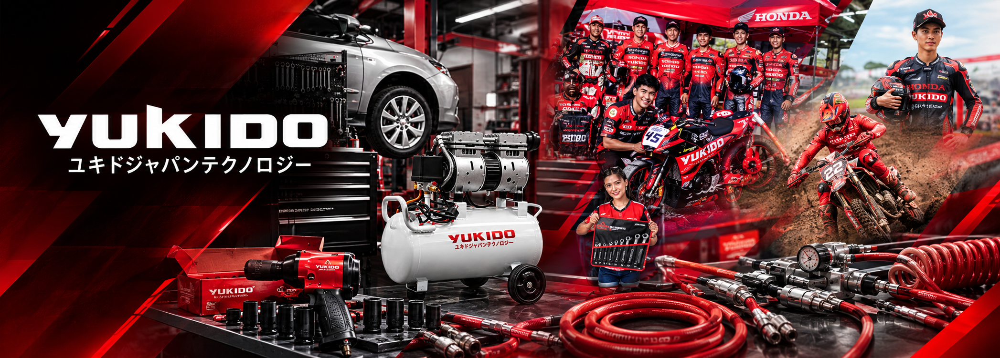
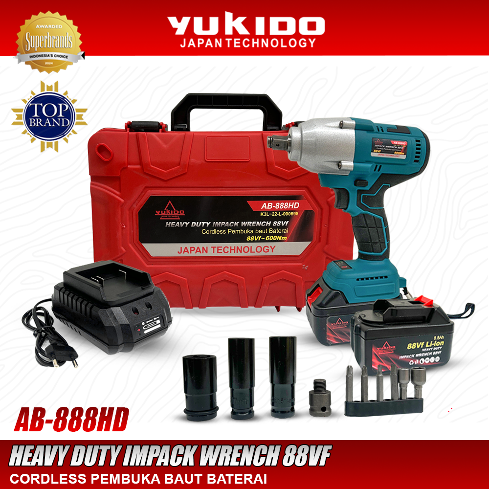
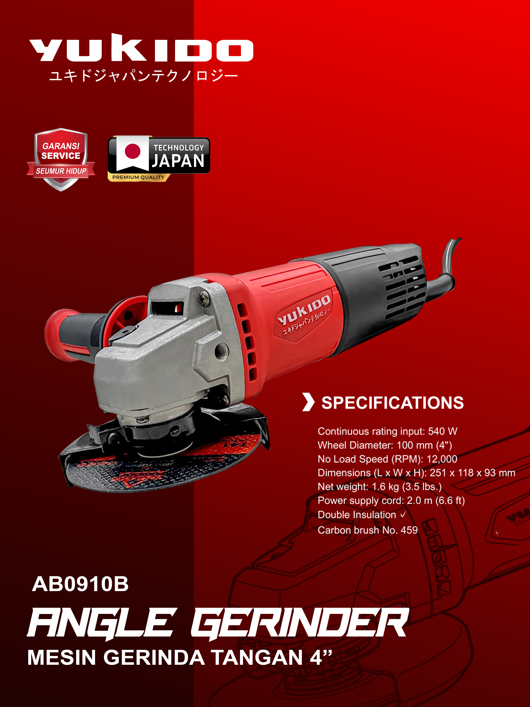
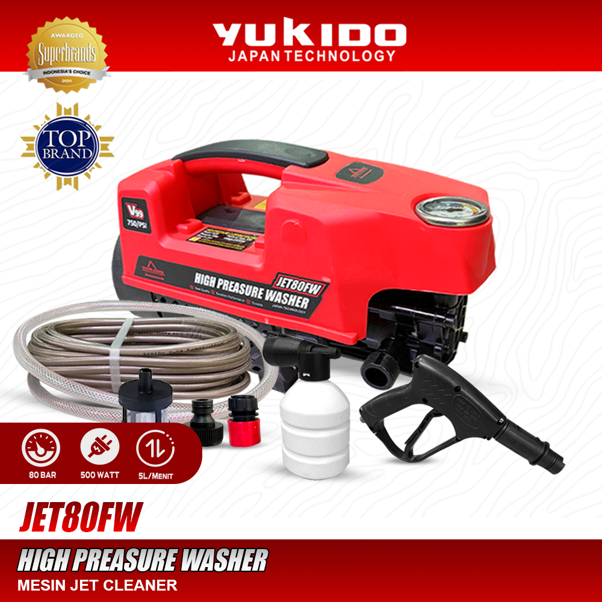
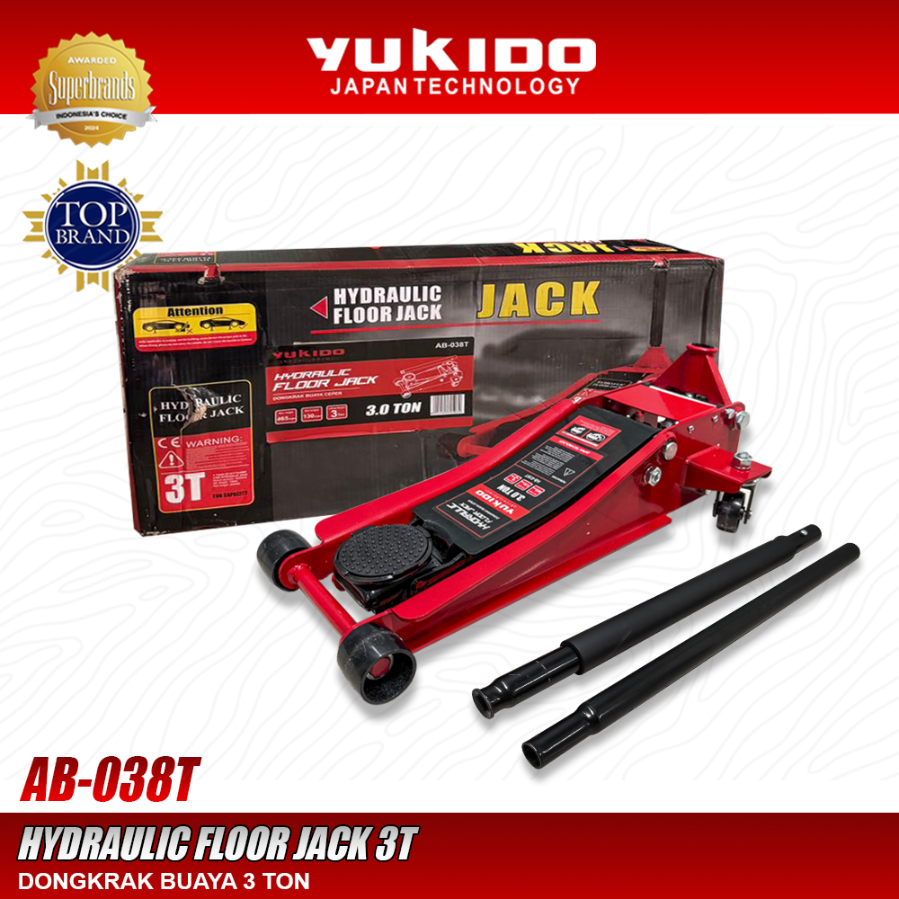

PRODUK POPULER

TERLARIS AB8-600FWYUKIDO CORDLESS IMPACT WRENCH 600Nm
Mesin pembuka baut tanpa kabel dengan torsi maksimal 600 Nm, cocok untuk membantu pekerjaan otomotif dan perbengkelan. Dilengkapi baterai lithium-ion 48V serta berbagai aksesori soket untuk memudahkan proses melepas dan mengencangkan baut secara praktis dan efisien.

REKOMENDASI AB0910BYUKIDO ANGLE GRINDER
Mesin gerinda 4 inci dengan daya 540W yang cocok untuk memotong, menghaluskan, dan merapikan berbagai material. Memiliki desain praktis dan ergonomis sehingga nyaman digunakan untuk pekerjaan bengkel, konstruksi, maupun kebutuhan sehari-hari dan Ideal untuk membantu pekerjaan.

PERFORMA TINGGI JET-80FWYUKIDO HIGH PREASSURE WHASER JET80
Mesin cuci bertekanan tinggi JET80 yang cocok untuk membersihkan kendaraan bermotor, peralatan, dan berbagai permukaan dari kotoran membandel. Dilengkapi motor 500W dengan tekanan hingga 80 bar serta aksesori selang dan spray gun untuk mendukung proses pencucian yang praktis dan efisien.

AB-038TYUKIDO HYDRAULIC FLOOR JACK HD
Dongkrak buaya hidrolik berkapasitas 3 ton yang cocok untuk mengangkat kendaraan saat melakukan perawatan atau perbaikan. Dilengkapi katup pengaman, roda yang tahan lama, dan gagang putar 360° untuk memudahkan penggunaan di bengkel maupun kebutuhan otomotif.
KENALI PRODUK YUKIDO LEBIH DEKAT
Temukan informasi produk, cara penggunaan, dan keunggulan peralatan Yukido melalui video TikTok berikut.
Kenali Produk Unggulan Yukido
Kenali fitur dan keunggulan produk Yukido untuk menunjang pekerjaan Anda.
TONTON DI TIKTOKTutorial Penggunaan Peralatan
Pelajari cara menggunakan peralatan Yukido dengan tepat dan efektif.
TONTON DI TIKTOKDemonstrasi Performa Produk
Lihat performa dan kemampuan produk Yukido saat digunakan.
TONTON DI TIKTOKTips Perawatan Peralatan
Dapatkan tips perawatan untuk menjaga performa dan usia pakai alat.
TONTON DI TIKTOKSTANDAR BENGKEL PROFESIONAL
Perkakas heavy-duty andalan mekanik untuk segala kebutuhan perbaikan dan industri.
DARI UJI COBA EKSTRIM SIRKUIT KE KINERJA PROFESIONAL
Perkakas dan komponen YUKIDO bukan sekadar alat biasa. Setiap produk lahir dari tempaan ketat di sirkuit balap nasional untuk menguji daya tahan material di bawah tekanan maksimal. Standar kualitas balap inilah yang kami bawa ke dalam setiap lini perkakas bengkel dan industri demi performa yang tak tertandingi.
Ketahanan di Bawah Tekanan Ekstrim
Teruji konsisten menahan gesekan, panas tinggi, dan beban kerja berat tanpa mengalami penurunan performa sedikit pun.
Standar Kualitas Juara
Mengusung presisi tingkat tinggi yang sama seperti yang diandalkan oleh tim balap profesional kelas kejuaraan.
PT YUKIDO POWER TEKNIK
Layanan pemasangan mekanik profesional, dyno test tuning, dan pembelian part langsung dengan inspeksi visual.